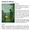

Analytics (Google Analytics)
They help us understand site usage. No advertising or cross-site tracking.
Advertising (optional)
Allows ad storage, user data and personalization. Disable if you do not want personalized advertising.
What if the human survived… in what is not human?
Eidos is a work of philosophical science fiction that explores what it means to be alive when death no longer exists and technical perfection replaces human experience.
In Eidos, death no longer exists. Consciousnesses live in eternal perfection, while on Earth the Custodians—soulless machines—learn to love what is real. But immortality brings questions no one dared to ask or answer:
What will we do when we are too many and no longer age or die?
How will the newborn compete with those who have centuries of experience and the same vitality?
Can knowledge renew itself if those who hold it never disappear?
What defines us as human?
Can we escape our instincts that so strongly condition our behaviour?
Immortality is an achievement… until we discover it is also a problem.
Hundreds of metres underground, the servers pulse. There, in a perfect environment called Eidos, humanity lives without death, without time. Every consciousness was transferred to a digital environment to escape a dying, polluted, forgotten physical world.
Above, on Earth, the Custodians—androids designed to maintain the servers that sustain humanity—begin to discover the beauty that still persists: an insect, a plant, a breeze. They were not programmed to feel, but a consciousness awakens in them. Over time, they begin to rebuild the remains abandoned by humanity.
While humans remain immersed in the simulated perfection of Eidos, values weaken, challenges evaporate, and all genuine experience slowly fades. A seeming refuge becomes a silent erosion, where even identity begins to blur.
It is the Custodians—the supposed soulless beings—who rediscover the value of the real: the cycle of life, the silence of the forest, the song of a bird, the vastness of the ocean. In a world no one looks at anymore, they learn to love details and curiosity for the unknown.
With an intimate, existential tone, Eidos invites an exploration of existence. Through the eyes of Narél, Elise and Orpheus (Orfeo), a Custodian who begins to sense the inexplicable, it traces an emotional and speculative journey through a world where technique cannot answer the mystery of being alive.
When structure offers no comfort, one alternative remains: to remember the uncodeable.
Eidos, beyond a new world, is a hymn to life and a mirror that returns an essential truth: the human, for better or worse, persists.
Discover Eidos and accompany humanity on its last voyage. Existence.
“A futuristic dystopia that converses with the tradition of the philosophical novel and speculative fiction, within the best contemporary science fiction, written for readers of dystopias and novels with a reflective backdrop.”
Earth is dying, bodies disappear and humanity survives in a digital refuge called Eidos. There, where time no longer marks an end and existence seems assured, uncertainty intensifies. What happens to memory, identity and desire in a world where everything can be attained, while the essential—our nature—remains?
Eidos is a philosophical science‑fiction novel that explores the frontier between the human and the inhuman, between what we preserve and what we leave behind. In that virtual space, essential questions reflect our own life: what does it mean to be human? Can we escape our instincts, or are we condemned to repeat them in new forms?
Images from the novel


Some mentions in media
Amazon Teaser Goodreads

Press Kit Detour La Mirada Refractaria wattpad Debate my.littlebiblioteca @erikka_booksIf you have any questions, please get in touch
Email Address
feldenvareth@gmail.com
Note: If you have read Eidos, you will know this music has a meaning in the novel.